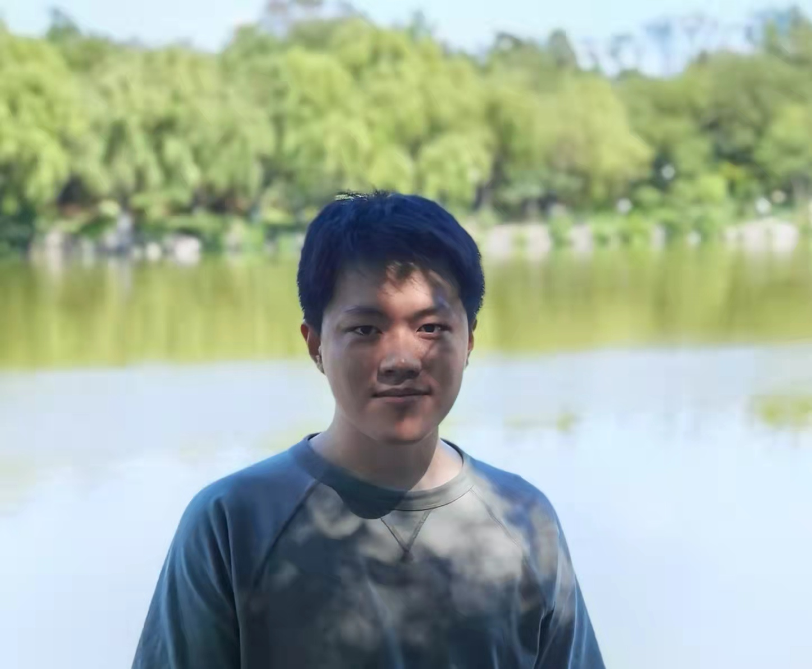
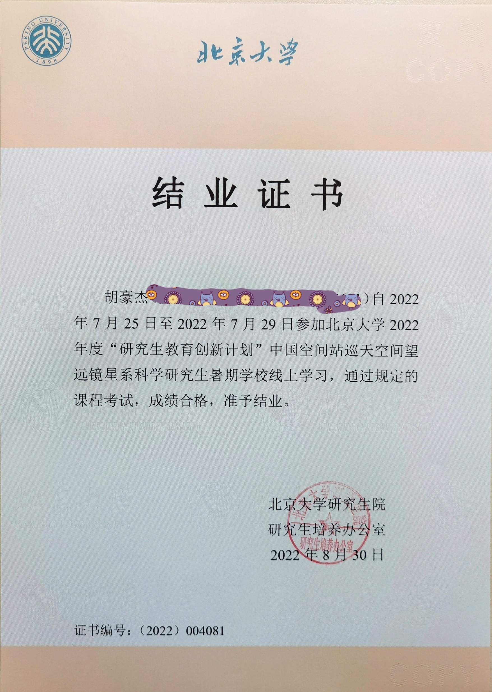
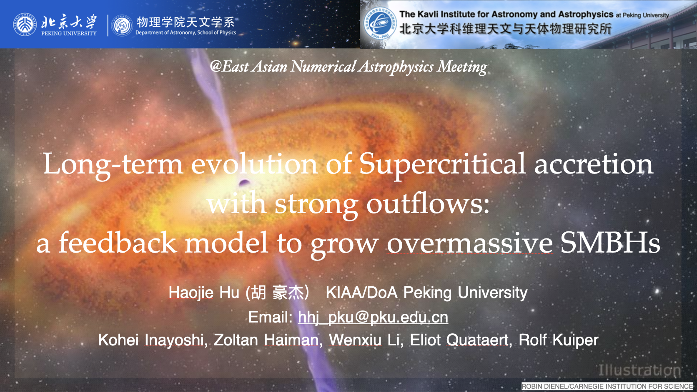
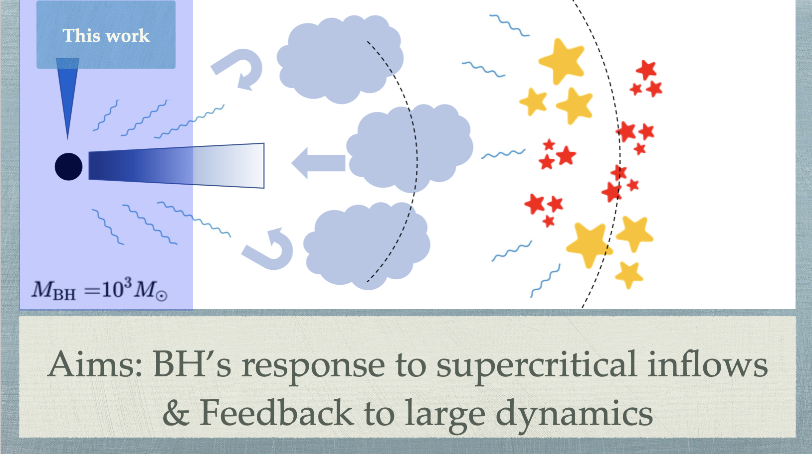

胡豪杰(Haojie Hu)
Welcome to my homepage


Education
I got my B.S. degree at East China University of Science and Techenology (aka, ECUST) in 2018.
Then I moved to Peking University as a Ph.D graduate (2018-2024, supposed to gradute in 2024). I am working on the rapid
growth of seed black holes (BHs) at early Universe, and their coevolution with host galaxies, under the supervision and
guidance of Kohei Inayoshi. I am also interested in the interplay between supermassive BHs (SMBHs) and intracluster medium
(AGN feedback).
Research
I am working on the rapid growth of seed black holes (BHs) at early Universe, and their coevolution
with host galaxies, under the supervision and guidance of Kohei Inayoshi. I am also interested in the interplay between
supermassive BHs (SMBHs) and intracluster medium (AGN feedback). The powerful observational ability of JWST will surely shed
lights onto the mysterious cosmic dawn.
Rapid growth of seed BHs at cosmic dawn.
AGN feedback----Cold gas filaments in Perseus Cluster: its formation and implications
Collaborators
Kohei Inayoshi--Ph.D. advisor
Yu Qiu(邱宇)
Zoltan Haiman
Publications
Talks and posts
Related websites
Events & Gallery
2019-11-04----2019-11-14: Tokyo University & Nagoya University
2021-10-11----2021-10-13: 2021 East-Asia AGN workshop in Chongqing University: Dynamics and Morphology of hot, fast-moving outflows.

2021-11-01----2021-11-05: 2021 The first KIAA forum on gas in galaxies for early career scientist.
Click to watch the talk: Dynamics and Morphology of Cold Gas in Fast, Radiatively Cooling Outflows: Constraining AGN Energetics with Horseshoes

2022-06-14: Lunch siminar at IPMU

2022-06-27----2022-07-01: EAS 2022: European Astronomical Society Annual Meeting

2022-07-25----2022-07-29: CSST summer school on galaxy science (as a paticipant)

2022-08-08----2022-08-12: Galaxy-IGM workshop 2022 (online,contributed talk & group discussion)

2022-09-12----2022-09-16: Origin, growth and feedback of black holes in dwarf galaxies (Flash talk)
2022-09-26----2022-09-30: East Asian Numerical Astrophysical meeting (contributed talk)

2022-10-27: Computational Astrophysics Seminar at University of Duisburg-Essen (contributed talk, online)
